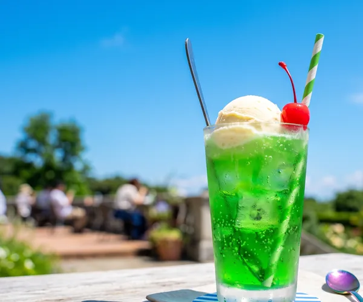
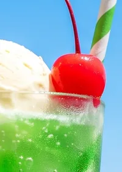
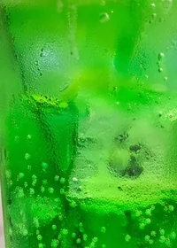
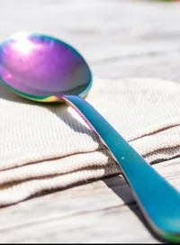
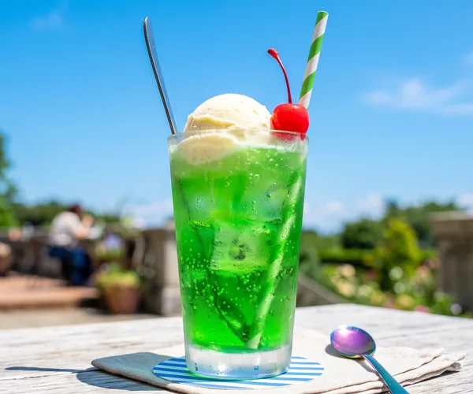

バナー制作② 写真で伝える
最終更新日：2026/10/12
写真
写真は一目で伝わる
クリーム
ソーダ7.1から メニューを見る
文字だけ
ソーダ7.1から メニューを見る

クリームソーダ7.1から メニューを見る
切りとり方
見せたいところで切りとる
全体を入れた
おいしそうなところに寄せた
形
形が変わると切りとる場所も変わる
クリーム
ソーダ7.1から メニューを見る
300 × 250
ソーダ7.1から メニューを見る
クリーム
ソーダ7.1から メニューを見る
320 × 100
ソーダ7.1から メニューを見る
写真の数
写真は1枚にしぼる



クリームソーダ7.1から メニューを見る
クリーム
ソーダ7.1から メニューを見る
1枚を大きく
ソーダ7.1から メニューを見る
文字の置き場所
文字は写真の空いているところに置く

クリームソーダ7.1から メニューを見る
クリーム
ソーダ7.1から メニューを見る
空に置いた
ソーダ7.1から メニューを見る
読みやすさ
文字の下に色を敷いて読みやすくする
クリーム
ソーダ7.1から メニューを見る
そのまま
ソーダ7.1から メニューを見る
クリーム
ソーダ7.1から メニューを見る
下に色を敷いた
ソーダ7.1から メニューを見る
色
色は写真から拾う
- 空#07A0EB
- ソーダ#2BB519
- さくらんぼ#E30104
- アイス#FEF9EB
クリーム
ソーダ7.1から メニューを見る
写真にない色
ソーダ7.1から メニューを見る
クリーム
ソーダ7.1から メニューを見る
さくらんぼの赤
ソーダ7.1から メニューを見る
写真の大きさ
写真は大きめのものを使う
クリーム
ソーダ7.1から メニューを見る
小さい写真をのばした
ソーダ7.1から メニューを見る
クリーム
ソーダ7.1から メニューを見る
十分な大きさ
ソーダ7.1から メニューを見る
写真素材
写真素材の使用ルール
ネットで見つけた写真は勝手に使えません。素材サイトの規約を確認してから使用しましょう。
やってみよう
同じ写真で2つのバナーを作ってみよう
入れる文字（2つとも同じ）
- 店名
- なみまちサイクル
- ひとこと
- 海沿いを自転車で走ろう
- ボタン
- 予約する
決まり
- 目的
- レンタサイクルの予約サイトに来てもらう
- 大きさ
- 300 × 250 px と 320 × 100 px の2つ
- 写真
- 2つとも同じ写真を1枚使う
- ファイル形式
- JPG